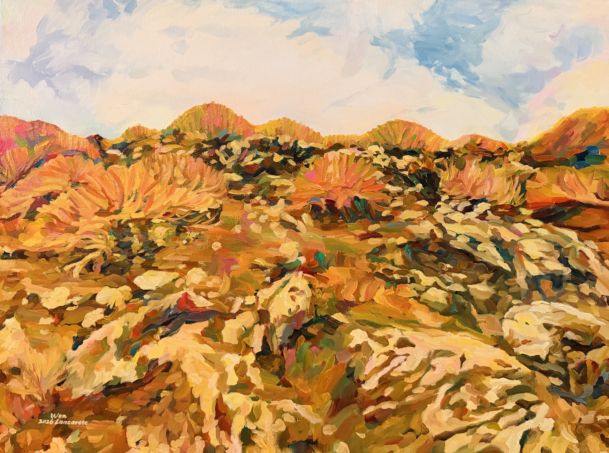

An independent artist's universe / 2026
✳
ART
IN FULL
COLOUR.
Places, memories and emotions — translated into vivid original paintings by Wenwen Cai.
Explore the paintings ↗
Made to feel something ✷
✳ PAINT WHAT YOU FEEL ✳ SEE THE WORLD DIFFERENTLY ✳ COLOUR WITHOUT RULES ✳ PAINT WHAT YOU FEEL ✳ SEE THE WORLD DIFFERENTLY ✳ COLOUR WITHOUT RULES
01 / Selected paintings
A WORLD
OF COLOUR.
Original paintings, unexpected perspectives, and the beauty of ordinary places.
MORE
THAN A
PLACE.
Artist's note
Every painting is both a creation and a response to a place — an invitation to look again, and feel more.
Meet the artist ↗